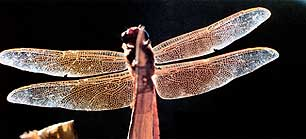
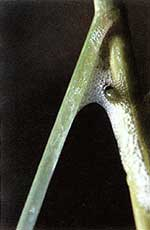

What one poet called, "All the live murmur of a summer's day," has always seemed to me more of a general buzzzzzzzz and hummmmm. Birds and other creatures chime in from time to time, but it's insects that dominate summer's symphony, day and night. Little wonder, when you stop to consider the sheer numbers. Of the 1.7 million known species on planet Earth, 1 million are insects. At least 100,000 different kinds fly, creep or crawl in North America.
This is not especially good news to most humans, who tend to associate insects with bites, stings and damaged crops. True, we can appreciate the butterflies painting our days and the crickets serenading our nights. But think "summer insects" in general and what images arise? Enraged bees and wasps; bloodthirsty mosquitoes; swarming gnats; invading ants; leaf-eating, sap-sucking garden gluttons.
To strike a blow against this bias, I thought I'd remind you of some of summer's other insects-some beneficial, all harmless and fascinating.
|
 DAVID CAVAGNARO |
 |
|